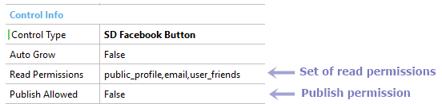

SD Facebook Button control (GeneXus 16)
The SD Facebook Button control gives the developer public information about the end user in this social network and helps to log in to / out of Facebook in an easy way, interacting with its native app or requesting through the browser. In order to use this feature, the developer must configure the Facebook App Id property. Adding the buttonThis control must consolidate the user state information. The steps to incorporate the button are described below:
Once finished, two new properties will be available:
FacilitiesOnce the developer sets the button appropriately, new facilities are available to manipulate the user data retrieved from Facebook. Structured Data TypesSocialUserData It encapsulates the user data retrieved from Facebook. It is enabled once the SD Facebook Button control is detected.
SocialUserData
{
Id: Character(20)
Name: Character(20)
FirstName: Character(20)
MiddleName: Character(20)
LastName: Character(20)
ProfileName: Character(20)
ProfileImage: Image
Gender: Character(100)
Birthday: Character(20)
Country: VarChar(40)
City: VarChar(40)
Email: Email
LocationLatitude: Character(20)
LocationLongitude: Character(20)
}
Note: If SocialUserData does not have this structure, please download and import this patch in your knowledge base. EventsA set of events is available to catch the relevant information for the developer. OnUserInfoUpdated This is the first event called after the end user starts a new Facebook session (async process). Once it's finished and the connection has been established, the user information is updated and available to the developer. OnUserLoggedIn This is an informative event that the developer can use to update some indication of the state of the current Facebook session. OnUserLoggetOut This is an informative event that indicates when the user logged out of the Facebook session. OnError This event retrieves the Facebook default error when something goes wrong during the authentication process. ExampleFirst, define a Character based variable called JsonUserData and drag it into the abstract layout of a Panel for Smart Devices. Then, set its Control Type property with "SD Facebook Button" value and note the new two properties displayed.  After that, define a new variable based on UserSocialData SDT (in this case is called SocialData). Then proceed to write an event to load it and say hello to our user.
Event &JsonUserData.OnUserInfoUpdated
Composite
&SocialData.FromJson(&JsonUserData)
msg(Format("Hello %1!",&SocialData.name))
EndComposite
Endevent
Finally, the result in runtime is shown below. Android device iOS device Considerations
&UserData.imageUrl = Format(!"http://graph.facebook.com/%1/picture?type=normal&height=300&width=300", &UserData.id.Trim()) Also, the developer can use this formula to get the image in different sizes through three possible values:
Scope
AvailabilityThis API is available as from GeneXus 15
|